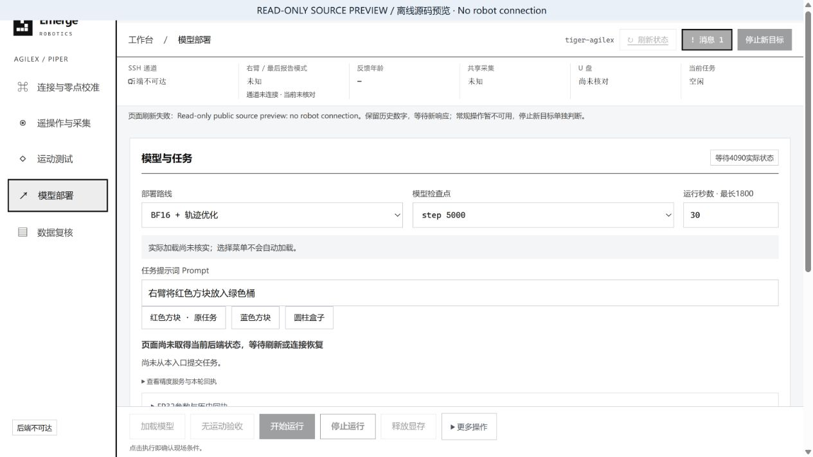
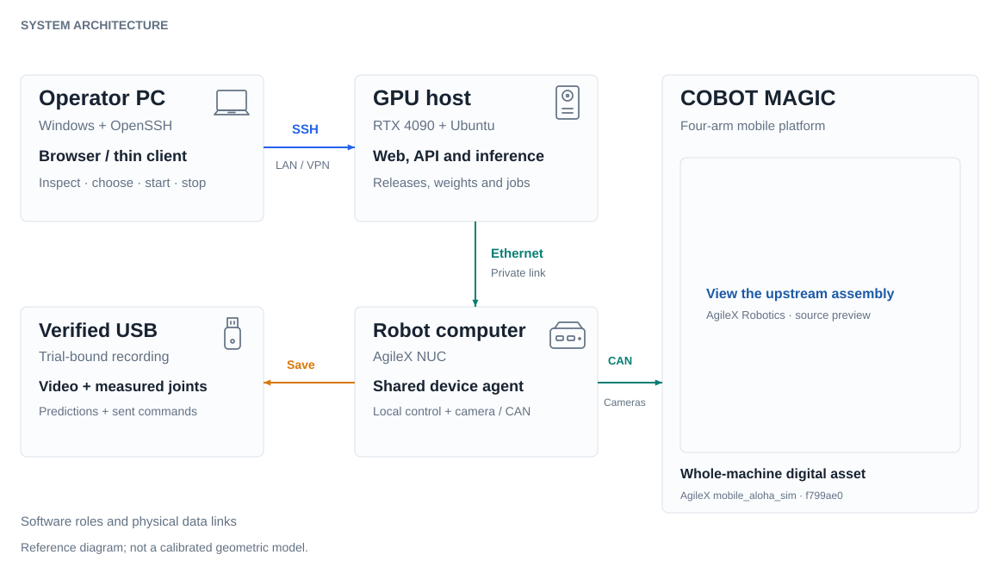
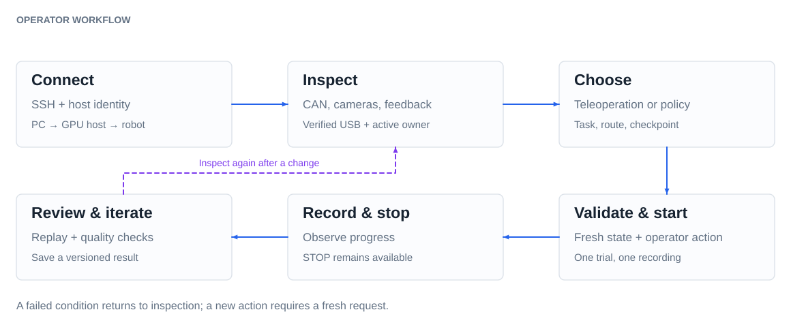
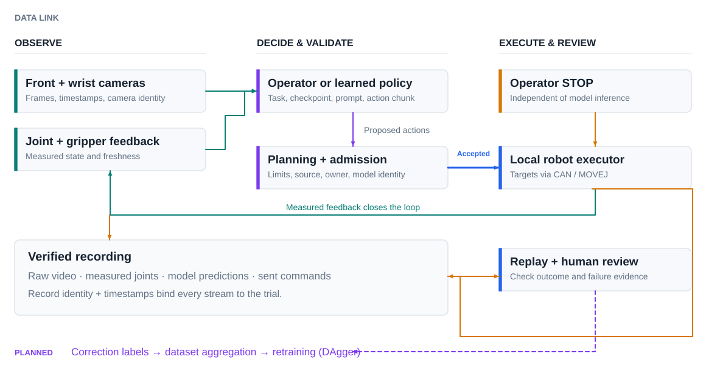

Connect & inspect连接与检查
SSH, cameras, CAN mode, feedback age and recording-drive status.SSH、相机、CAN 模式、反馈年龄与录制盘状态。
EMERGE ROBOTICS · OPEN OPERATOR WORKSPACE
HKU Faculty of Engineering · Tam Wing Fam Innovation Wing
Connect. Demonstrate. Deploy. Review.连接、示教、部署、复核。
One browser workspace for COBOT MAGIC, an RTX 4090 edge host and your Windows PC.面向 COBOT MAGIC、RTX 4090 端侧主机与 Windows PC 的统一网页工作台。
v0.1.3 · Research release. The Windows package opens offline; live operation connects to your authorized lab server.v0.1.3 · 研究版本。Windows 包可离线打开；真机操作连接到你已获授权的实验室服务器。
Scrub the timeline to inspect both real cameras and measured joint motion.拖动时间轴，同步查看真实双视角与实测关节运动。
FRONT + RIGHT WRIST · Recorded images | MuJoCo · Measured J1–J6
© 2026 Yang Taige. Watch on this project site.© 2026 Yang Taige。请在原项目网页观看。 Video rights视频使用条款
Example record: the original run ended on an evidence-queue error; this is not a scored success. Native camera/state streams were retained. The model follows measured joints, without contact simulation; gripper opening is shown numerically.示例原运行因证据队列错误结束，未评定任务成功。原生相机与状态流已保留。模型按实测关节回放，不模拟接触；夹爪开度以数值显示。
30 fps presentation, 46.83 s. Camera selection follows the native state-to-frame references; hardware exposure synchronization is not claimed. PiPER geometry is from the MIT-licensed piper_ros source. Finger geometry remains at its source pose because the aperture mapping has not been calibrated.30 fps 展示、46.83 秒。相机选帧依据原生状态到帧引用，不宣称硬件曝光同步。PiPER 几何来自 MIT 许可的 piper_ros。夹爪映射未标定，指爪几何保留源姿态。
Recording manifest · Model manifest · Joint samplesSSH, cameras, CAN mode, feedback age and recording-drive status.SSH、相机、CAN 模式、反馈年龄与录制盘状态。
Leader–follower demonstration with video, measured joints and trial-linked records.主从示教，同步保存视频、实测关节及关联试验记录。
Select prompt, checkpoint and FP32 + RTC, BF16 optimization or Realtime-VLA V2.选择 Prompt、检查点和 FP32 + RTC、BF16 优化或 Realtime-VLA V2。
Joint and gripper targets, measured trajectories, retained commands and failure receipts.关节与夹爪目标、实测轨迹、实际命令和保留的失败回执。
Current policy experiments use the right follower arm. DAgger intervention tools are under development.当前策略实验使用右执行臂；DAgger 人工介入工具仍在开发。


 Loading the AgileX assembly…正在载入 AgileX 整机…
Loading the AgileX assembly…正在载入 AgileX 整机…Source assembly: AgileX mobile_aloha_sim · f799ae0.整机来源：AgileX mobile_aloha_sim · f799ae0。


Extract the Windows ZIP and double-click Start-Workbench.cmd. Python and OpenSSH are included. Use Connect for an already configured 4090 server; no model weights or private machine profiles are bundled.解压 Windows ZIP，双击 Start-Workbench.cmd，内置 Python 与 OpenSSH。在 Connect 页面接入已配置的 4090 服务；不包含模型权重或私有机器配置。
Windows x64 SDK Release & checksums版本与校验和